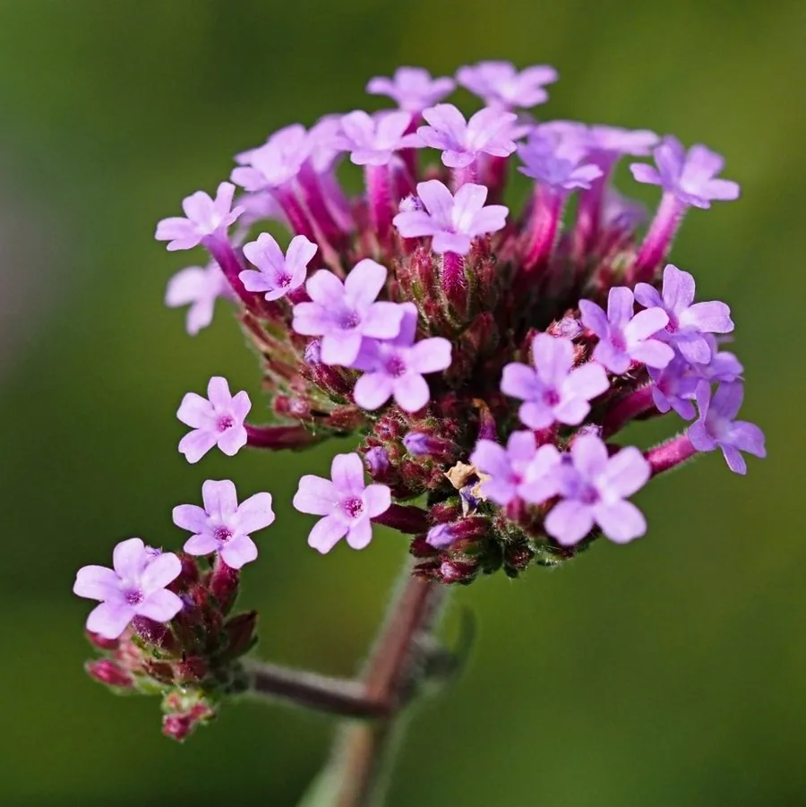

花卉与草本 · 植物界
柳叶马鞭草 Verbena bonariensis

马鞭草科多年生草本，高挑茎秆顶端开出蓝紫色小花团，轻盈飘逸，是花境中营造空气感的常用植物，原产南美。
- 分类
- 门被子植物门纲木兰纲目唇形目科马鞭草科属马鞭草属
- 栖息环境
- 南美草原，喜光、耐旱、耐瘠薄
- 地理分布
- 原产南美洲，世界各地栽培，部分温暖地区逸生为入侵植物
- 保护级别
- 暂无评估；在部分地区逸生为入侵植物
物种志
柳叶马鞭草为马鞭草科马鞭草属多年生草本，株高 1–1.5 米，茎直立、四棱形，上部多分枝。叶片对生，披针形，边缘有锯齿。聚伞花序组成顶生的伞房状花团，花小，蓝紫色，花期 6–10 月；果实为蒴果。
柳叶马鞭草原产南美洲的草原，喜阳光充足、温暖干燥和排水良好的环境，耐旱耐瘠薄，适应性强，在部分地区逸生后成为入侵植物。它茎秆高挑、花序轻盈，蓝紫色小花团仿佛悬浮在空中，是花境中营造空气感的重要植物，也常作切花。栽培以播种和扦插为主，花后修剪可促进二次开花；因其自播力强，需注意控制蔓延。
形态与习性
- 株高1–1.5 米，茎四棱形
- 花期6–10 月，花序伞房状
- 果期花后结蒴果
- 光照极喜光
- 水分耐旱，忌积水
- 土壤疏松、排水良好的壤土
- 繁殖播种、扦插
- 主要用途花境中景、切花、景观绿化
趣味知识
- 柳叶马鞭草茎秆高挑，蓝紫色花团仿佛悬浮在空中。
- 它原产南美草原，耐旱耐瘠薄，自播力强。
- 在部分地区逸生后大量繁殖，被视为入侵植物。
- 花后修剪可促进二次开花，是花境的常用材料。